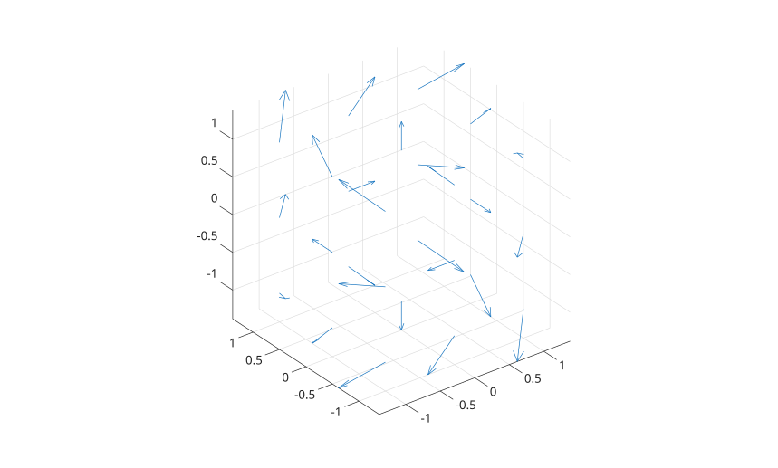

quiver3(Z, U, V, W)
quiver3(X, Y, Z, U, V, W)
quiver3(..., scale)
quiver3(..., LineSpec)
quiver3(..., propertyName, propertyValue)
quiver3(parent, ...)
h = quiver3(...)
| Paramètre | Description |
|---|---|
| X, Y, Z | Coordonnees des bases des fleches, sous forme de scalaires, vecteurs, matrices ou tableaux de meme taille que les composantes. |
| U, V, W | Composantes vectorielles, sous forme de tableaux numeriques de meme taille. |
| scale | Facteur d'echelle automatique. Utiliser 0 pour desactiver l'echelle automatique. |
| LineSpec | Specification de style de ligne, marqueur et couleur. |
| parent | Parent axes ou hggroup. |
| propertyName | Nom de propriete sous forme de chaine scalaire ou de vecteur de caracteres. |
| propertyValue | Valeur de propriete. |
| Paramètre | Description |
|---|---|
| h | Objet graphique quiver. |
quiver3(Z,U,V,W) trace des fleches 3-D sur une grille x-y reguliere en utilisant Z comme donnees de coordonnee z.
quiver3(X,Y,Z,U,V,W) trace les fleches aux coordonnees donnees par X, Y et Z.
L'objet retourne a le type quiver. Ses proprietes publiques incluent XData, YData, ZData, UData, VData, WData, AutoScale, AutoScaleFactor, ScaleFactor, Color, LineStyle, LineWidth, Marker, MarkerSize, MaxHeadSize, ShowArrowHead, Alignment, DisplayName et les proprietes graphiques communes.
[x, y, z] = meshgrid(-1:1, -1:1, -1:1);
u = y;
v = -x;
w = z;
quiver3(x, y, z, u, v, w);
axis equal
x = [0 1 2];
y = [0 1 0];
z = [0 0 1];
u = [1 0 -1];
v = [0 1 0];
w = [0.5 0.5 1];
h = quiver3(x, y, z, u, v, w, 0, 'r--o');
h.LineWidth = 1.5;[X,Y] = meshgrid(-2:0.25:2,-1:0.2:1);
Z = X.*exp(-X.^2 - Y.^2);
[U,V,W] = surfnorm(X,Y,Z);
quiver3(X,Y,Z,U,V,W)
hold on
surf(X,Y,Z)
axis equal| Version | Description |
|---|---|
| 2.0.0 | objet graphique quiver natif |